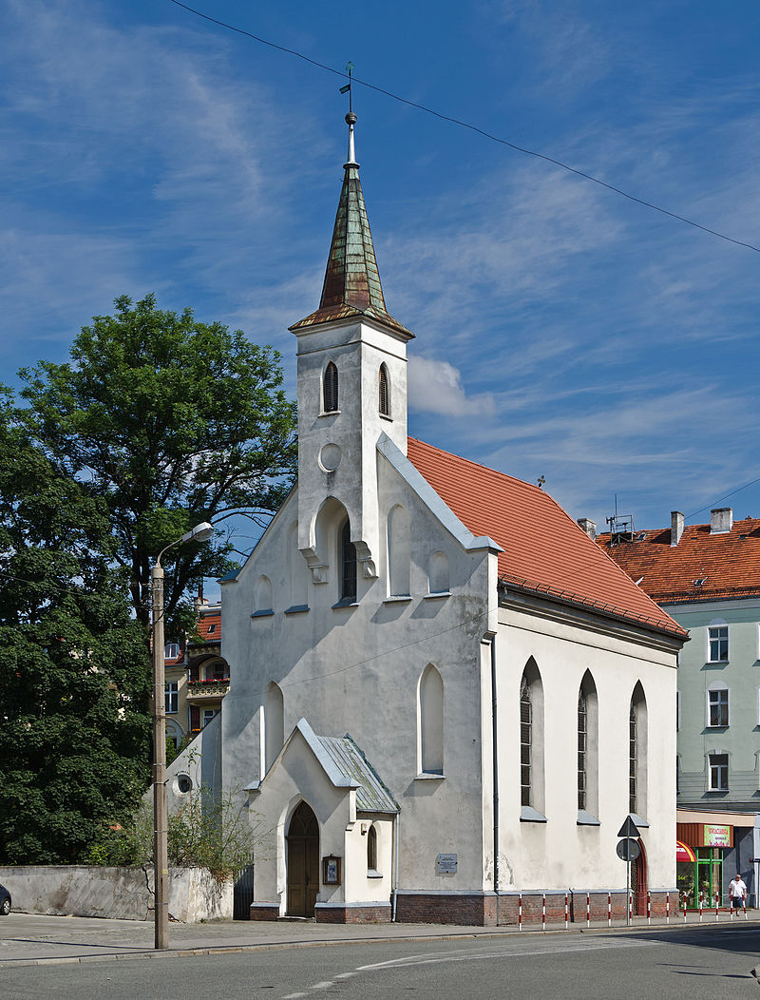

Kościół Zwiastowania Najświętszej Maryi Panny w Nysie
 Niewielki kościół filialny parafii św. Jakuba, dawniej należący do jezuitów. Kościół położony jest w Nysie przy ulicy Celnej nieopodal skrzyżowania z ulicą Moniuszki. W 1372 roku Anna, wdowa po mieszczaninie nyskim Hanco Isenecherze, sfinansowała budowę niewielkiej kaplicy pod wezwaniem Bożego Ciała przy nieistniejącej już dziś Bramie Celnej. Około 1434 roku kaplicę rozbudowano do rozmiarów niewielkiego kościółka i wyposażono w dwa ołtarze.